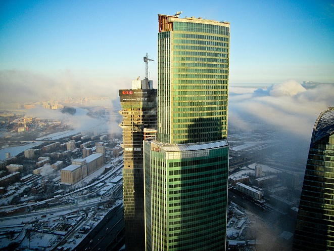

Башня Евразия
«Стальная вершина» — единственная стальная башня Москва-Сити

Характеристики
- Высота:309 м
- Годы строительства:2005-2014
- Девелопер:«МосСитиГрупп»
- Застройщик:ЗАО «ТЕХИНВЕСТ»
- Общая площадь:193 405 м²
- Скорость лифтов:7 м/с
- Количество этажей:72
- Количество машино-мест:953
- Инфраструктура:8 322 м²
- Офисные помещения:82 817 м²
- Апартаменты:26 907 м²
- Участок:12
Стальная вершина
Деловой центр «Евразия» — стильное, лаконичное современное здание с довольно простым, но от того еще более эффектным визуальным решением. Башня Евразия является самым высоким в Европе зданием с металлическим каркасом по периметру здания.
Фасад небоскреба выполнен из зеленого стекла в сочетании с камнем и пропускающими свет конструкциями, что выгодно подчеркивает элегантность постройки, именуемой некоторыми «Стальная вершина».
«Евразия» — единственная стальная башня в «Москва-Сити», все остальные выполнены из бетона. Это уникальное инженерное решение делает башню особенной среди других небоскребов делового центра.
Сегодня в башне расположены офисы класса А, апартаменты с панорамным видом, рестораны и фитнес-центр. Высотное здание также является штаб-квартирой банка ВТБ, что добавляет ему статусности и значимости.
Как добраться
📍 Адрес: Пресненская набережная, 12, Москва
🚇 Метро: Выставочная, Международная, Деловой центр